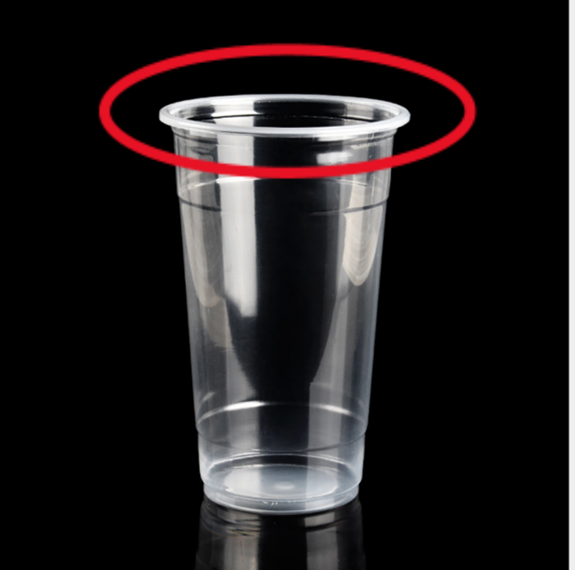
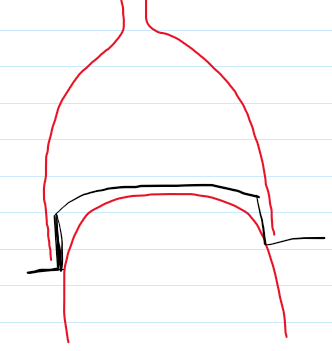

Specifically, the competition scoring system was the rocket that had
the longest time in the air won and it needed to land in the
designated area. The water rocket was required to have a parachute as
well. A water rocket is a simple model rocket that uses pressurized
air to expel water for propulsion.

We started with finding what type of bottle to use for the body of
the rocket. Preferably, it should be a 1.5L bottle. We gathered
multiple of different soft drinks brand bottle but nothing beated an
Aquafina bottle. It was because the bottle mouth fitted the pipe of
the launch pad just enough, so it was not too tight or too loose.
On the second part, we built the launch pad which was basically made of pvc pipes and an air valve. We based it on the example model that an instructor had shown us. The hard part was keeping the middle upward pipe straight when we glued it.
On the third part, we worked on the fins, the heads of the rocket, parachute deployment mechanism and the type of material for the parachute. The head of the rocket was the hardest for us.
In terms of the parachute, we used plastic bags since it was lightweight, and common to be used as a parachute for other toys too. However, upon testing, plastic bag was unable to be deployed properly and ripped. It seemed like strong wind high up blew so hard. We ended up with a piece of cloth for the parachute, followed by folding it properly so it could deploy successfully.
On the second part, we built the launch pad which was basically made of pvc pipes and an air valve. We based it on the example model that an instructor had shown us. The hard part was keeping the middle upward pipe straight when we glued it.
On the third part, we worked on the fins, the heads of the rocket, parachute deployment mechanism and the type of material for the parachute. The head of the rocket was the hardest for us.
In terms of the parachute, we used plastic bags since it was lightweight, and common to be used as a parachute for other toys too. However, upon testing, plastic bag was unable to be deployed properly and ripped. It seemed like strong wind high up blew so hard. We ended up with a piece of cloth for the parachute, followed by folding it properly so it could deploy successfully.
We knew the head needed to be pointy for sure. We relied on the air
resistance to lift off the head. A bottle upper part, a cone shaped
folded paper head was implemented but it either came off before the
rocket reached maximum height or was attached to the rocket too
tightly. They were inconsistent in the chance of deploying the
parachute.


Fortunately, one time after class, I sat near a trash can and saw
plastic cups and I realized those cups head had a potential. I
instantly came up with the idea of cutting the plastic cup head out,
sticking it upside down to the head of the rocket, and resting the
bottle head on the edge of the cup head. It solved the problem where
when the rocket was shot into the air, the head was pushed down so
it was attached too tightly with the rocket. Now, it was tight
enough so that it would not leave the rocket until maximum height
and loose enough to pop out easily for the parachute to be deployed!
At the end, we got first prize! To be honest, I could not have done
these without my teammates even if I had had a breakthrough idea.
They helped me in testing, recording the rocket performance for each
design, getting the materials to test with and most important of
all, boosting my confidence!
As you can see in the video down below, I was the one who was kneeling down, holding the launching station, and when the rocket landed inside the allowed area. My team were overjoyed!
Thank you for reading!

As you can see in the video down below, I was the one who was kneeling down, holding the launching station, and when the rocket landed inside the allowed area. My team were overjoyed!
Thank you for reading!